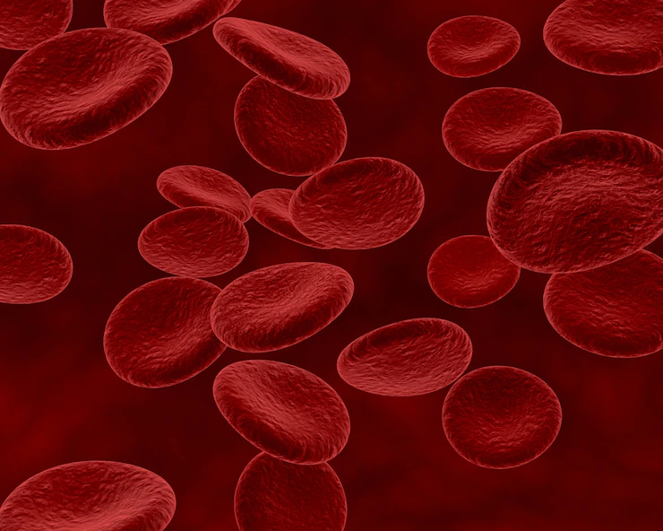

FUNÇÃO DAS HEMÁCIAS
Introdução
A principal função das hemácias é o transporte e troca gasosa do oxigênio e gás carbônico entre os pulmões e os outros tecidos.
Você sabe como funciona esse processo? Vem com a gente que vamos te ensinar passo a passo como tudo funciona!
Transporte de Oxigênio
Passo 1: O início desse processo se dá nos vasos capilares dos pulmões. A hemoglobina (proteína presente nos glóbulos vermelhos) se liga ao oxigênio que foi inalado na respiração mecânica, formando a oxihemoglobina.
Passo 2: As hemácias, já ricas em oxigênio viajam pelas artérias até alcançar os vasos capilares do tecidos.
Transporte de Gás Carbônico
Passo 3: É nesse momento que o O2 é jogado nos tecidos e ao mesmo tempo o CO2 vai para dentro das hemácias. Quando o CO2 se junta com a hemoglobina é formado a deoxihemoglobina.
Passo 4: As hemácias, agora ricas em gás carbônico seguem através do sangue venoso (pobre em O2) até chegar no coração e partir para os pulmões.
Passo 5: Dentro dos vasos pulmonares o CO2 se desprende da hemoglobina das hemácias e é trocado por uma nova dose de O2. Iniciando novamente o ciclo.